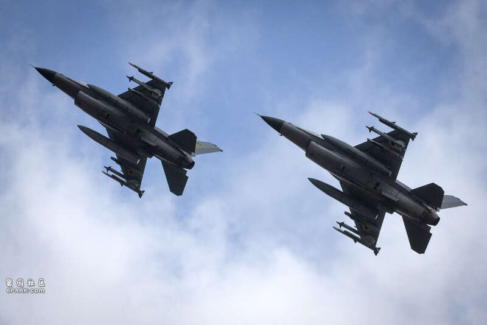
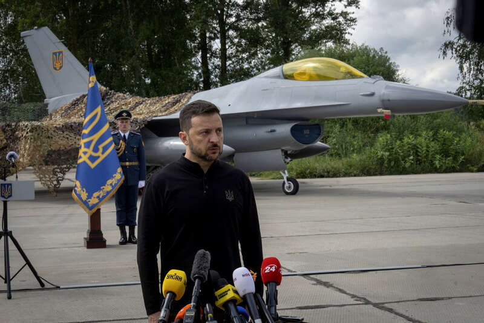

乌克兰收到首批美制F-16战机，乌国总统泽伦斯基（Volodymyr Zelenskyy）4日大秀F-16在乌国上空飞行的画面，他致词的同时，2架F-16飞越他的头顶上空。 （美联社）
乌克兰总统泽伦斯基（Volodymyr Zelenskyy）昨（4）日证实收到首批美制F-16战机，他致词的同时，2架F-16飞越他的头顶上空。泽伦斯基并未说明F-16将如何参与对俄战事，不过专家分析，首批F-16可能会执行3项核心任务。
综合美联社、《纽约时报》（New York Times）报导，泽伦斯基昨日在乌克兰境内某处举行的乌克兰空军日（Air Forces Day）活动上，展示北约国家提供的首批美制F-16战机，画面显示他就站在2架F-16前致词，发表谈话期间，另外2架F-16飞越他头顶上空。

乌克兰总统泽伦斯基（Volodymyr Zelenskyy）4日在2架F-16战机前发表谈话。 （美联社）泽伦斯基回忆过去2年来不断游说盟友提供F-16，如今「F-16在乌克兰了，我们办到了」，「我们的战斗飞机将带我们更接近胜利」。
他说乌克兰飞行员已开始「使用」F-16战机，但并未说明这批F-16是否已参与作战任务，他也未说明乌克兰究竟收到多少架F-16。
匿名美国官员透露，大约6名飞行员正在乌克兰领空试飞这批F-16，乌国飞行员正在适应小规模任务，尚未与俄罗斯交战。
另外乌克兰高阶军官透露，基辅可能会将部分F-16部署在国外军事基地，以避免遭俄罗斯攻击，不过俄罗斯总统普丁先前已放话，莫斯科可能考虑空袭停放乌国战机的北约设施。
美国总统拜登去（2023）年8月同意盟国提供乌克兰二手F-16，包括比利时、丹麦、荷兰、挪威等北约盟国，将在未来几个月、甚至几年，陆续提供乌克兰超过60架F -16。
F-16将能强化乌国的空中防卫能力，但专家认为，光是取得F-16，并无法一举扭转战局。
专家：F-16或助乌军执行3核心任务华府智库「欧洲政策分析中心」（Center for European Policy Analysis）的伯尔萨里（Federico Borsari）认为，F-16可能在乌克兰执行3项核心任务，包括拦截轰炸乌克兰的俄军飞弹及无人机、压制俄军防空系统，以及发射飞弹打击俄军阵地及弹药库，他认为F-16将能影响乌俄战争中的部分动态发展。
美联社指出，F-16能携带射程超过250公里的英国暴风之影（Storm Shadow）巡弋飞弹，可能打击俄罗斯境内目标；乌军也可能获得长程空对空飞弹，可能威胁俄军轰炸机及战机；此外，F-16较先进的雷达系统，将能让飞行员比驾驶米格-29（MiG-29）、苏恺-27（Su-27）、苏恺-24（Su-24）时，定位更远的目标。